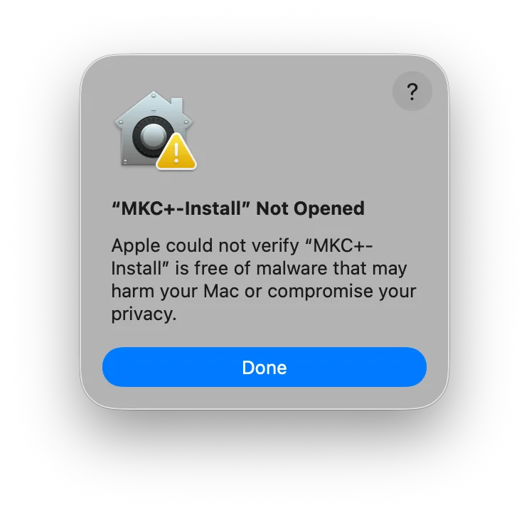
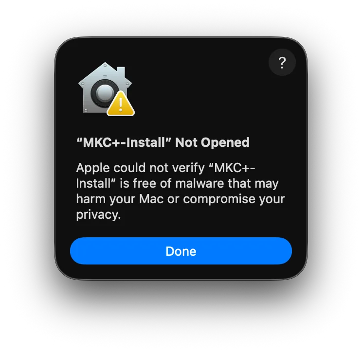
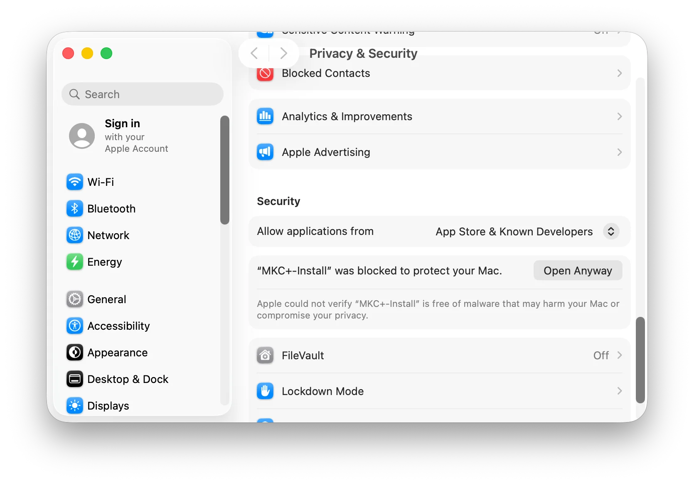
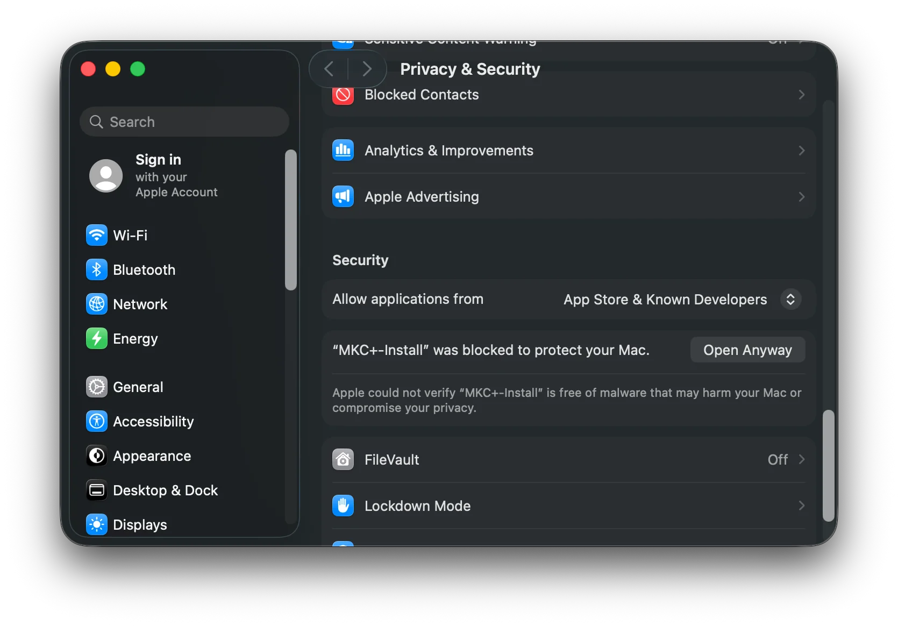
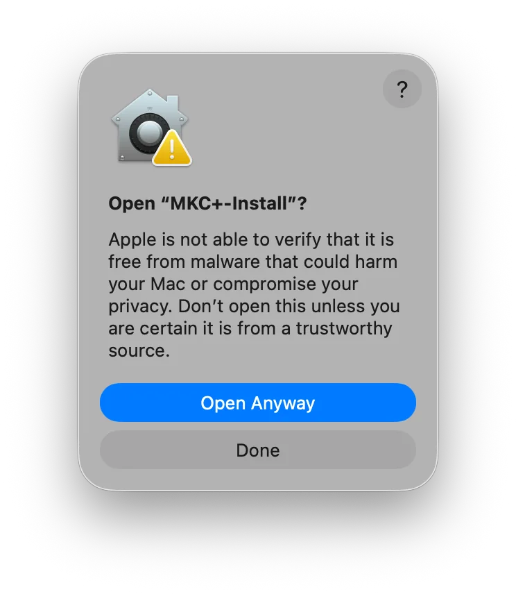
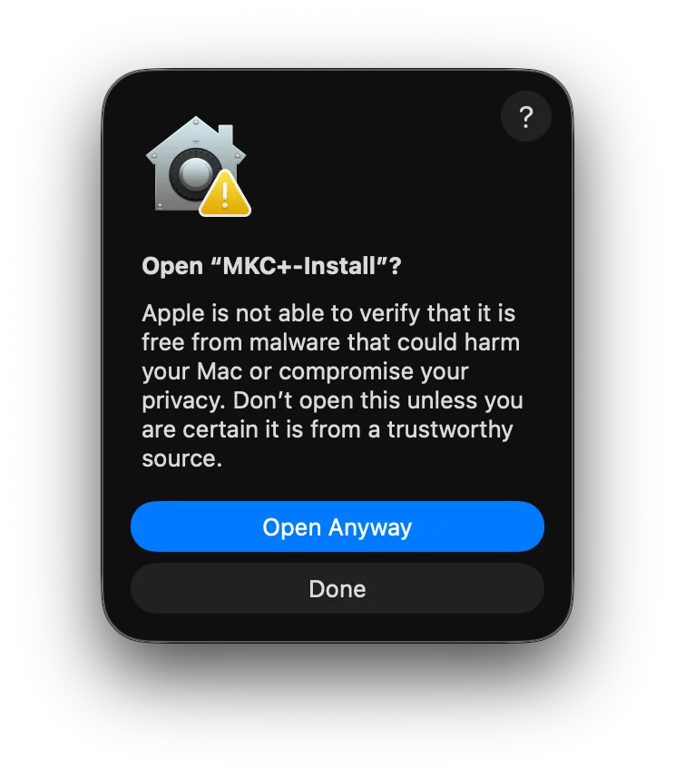
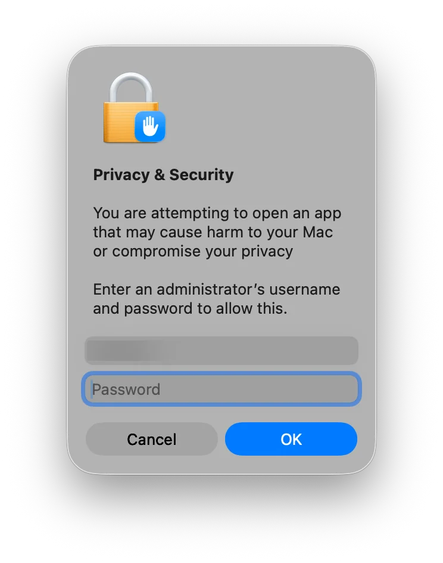
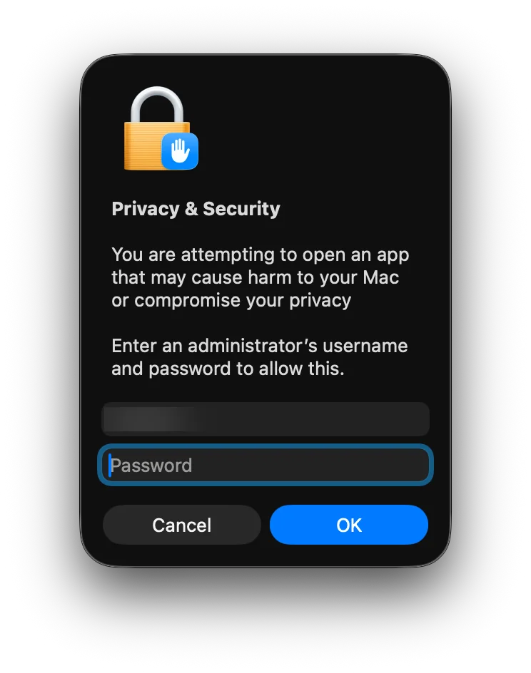

Open MKC+ on a Mac
MKC+ is not signed with an Apple Developer certificate yet, so the first time you open it, macOS stops it and asks you to approve it. You do this once.
1. Open the installer
Open MKC+.dmg and double-click MKC+-Install. macOS says it could not verify that MKC+-Install is free of malware. Click Done.


2. Click Open Anyway
Open System Settings, then Privacy & Security. Scroll down to Security, where it says MKC+-Install was blocked, and click Open Anyway.


3. Confirm
Click Open Anyway again, then enter your Mac's password or use Touch ID, and click OK. MKC+-Install opens and installs MKC+.




After that, MKC+ opens like any other app and updates itself.